⌥ Option + drag
Draw a box
Drag a box round an object. Gloss shows Reading, then expands the chip into an answer.
gloss, noun: a note written beside a text to explain it.
Point at stuff and go “what?”
Gloss is a Chrome extension for Google Street View. Hold ⌥ Option and drag a box over a sign, a menu, a poster or a building. Gloss shows an English translation or description of your selection.
Version 0.3.2, for Chrome on a computerGloss runs in Chrome on a computer It runs on shared keys until 14 December 2026. After that, you supply your own. Download the zip anyway
Try it here. Hold ⌥ Option and drag a box over a cloud.
 Imagery © Google
Imagery © Google
Using Gloss
You start each gesture by holding down ⌥ Option. On Windows and Linux the key is Alt. If you are not holding it, Gloss ignores clicks and drags except clicks on its own labels.
⌥ Option + drag
Drag a box round an object. Gloss shows Reading, then expands the chip into an answer.
⌥ Option + click
You can click a spot instead of drawing a box. Gloss marks it with a small ring and shows its label and card.
⌥ Option + ⇧ Shift + drag
Drag the box and type your question, then press Enter to send it or Esc to cancel.
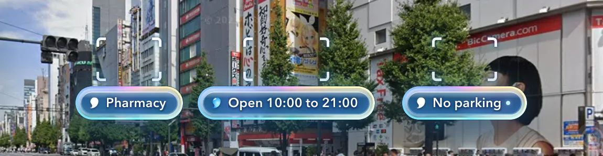
Imagery © GoogleGloss shows each finished answer as a small label below the selected object. You can click the label to open the whole card, then click elsewhere or press Esc to close it.
All three gestures work on this page, using preset answers about the page itself. The extension reads any area you select.
Repaint
When you press the card’s Repaint button, Gloss sends the sign’s picture and the English to an image model, which paints the English onto the sign in the sign’s own style. Repaint works in any language, Vietnamese or Polish as well as Japanese.
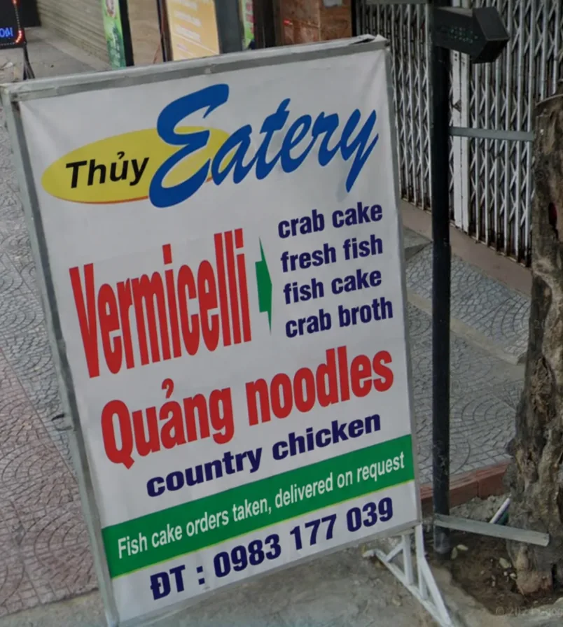
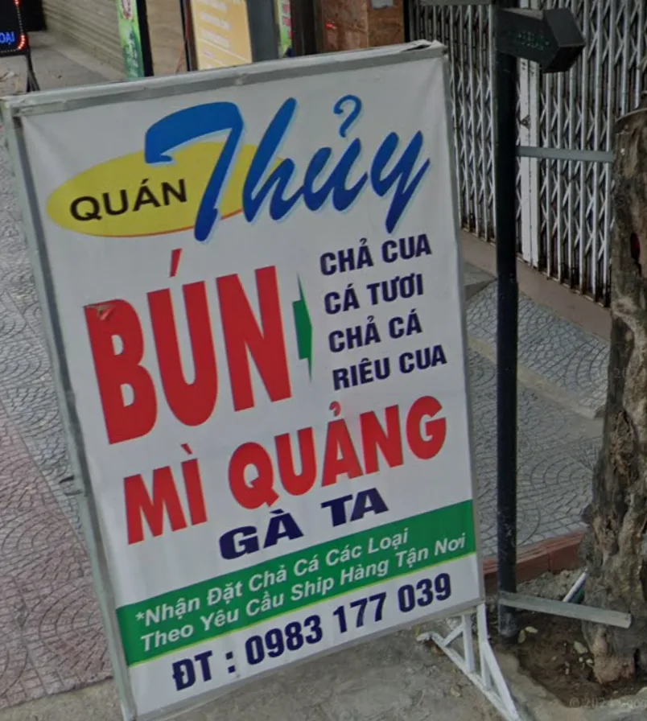
Imagery © Google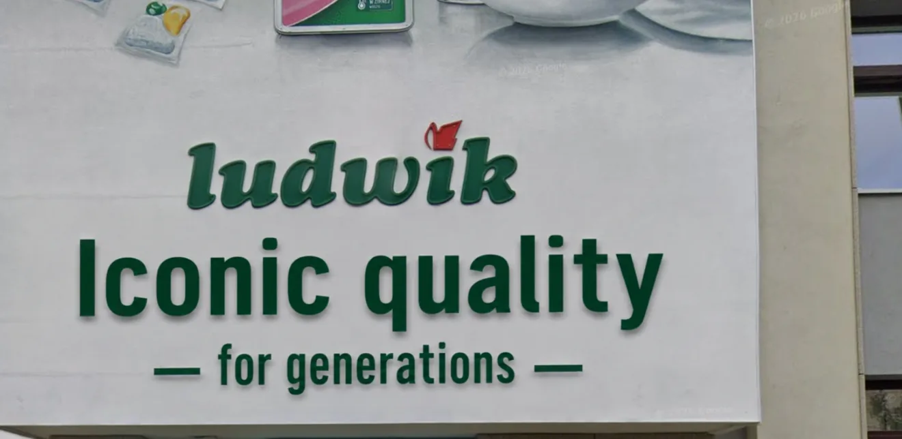
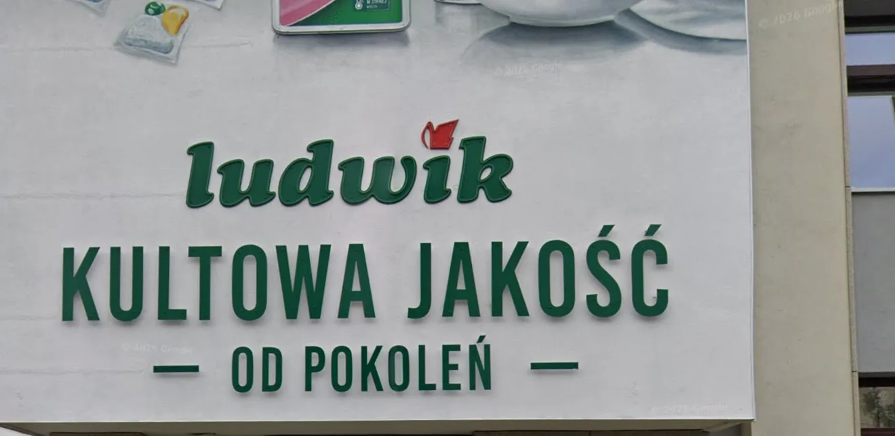
Imagery © Google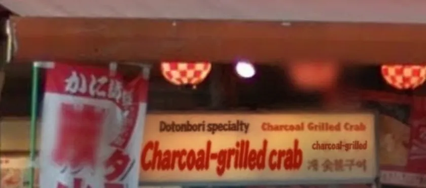
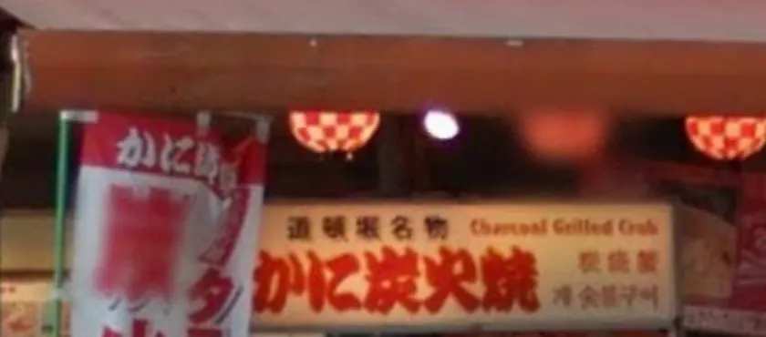
Imagery © GoogleA repaint takes about 20 to 45 seconds, or up to two minutes if the first attempt fails its check and Gloss retries it.
A repaint must pass a check before Gloss shows it. Gloss reads the result back without the expected wording, and every word must match. Only the lettered lines and the areas immediately beside them come from the image model; the rest is Street View’s own picture. Gloss never shows a repaint that fails twice.
Each picture above changes between the original and the repaint a few times. You can press and hold an AI repaint badge to see the original again, as you can in Gloss.
Gloss features
Gloss keeps the answer at the spot you selected, with no sidebar or chat window.
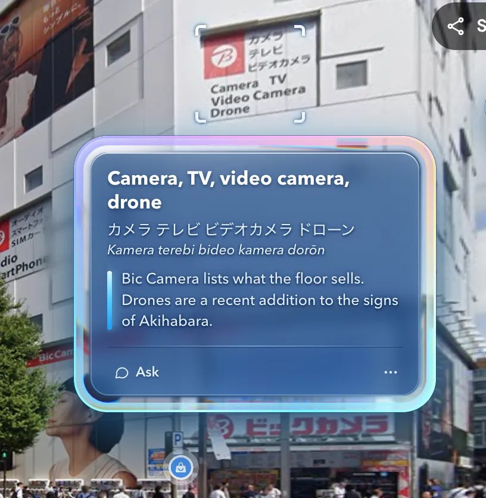
Imagery © GoogleThe card shows the answer in English first, with the original writing and pronunciation below it. It includes a note when useful. If you ask a follow-up, Gloss adds the reply to the same card.
Through the three dots, you can copy either text, delete the note or view the response time.
 Imagery © Google
Imagery © Google
Gloss saves each finished answer automatically, so your notes are still in place if you return next week.
The pill at the top right shows the number of notes on this view. You can click it to open the saved list, with notes here, notes within 150 m and the latest 20, and select Labels, Dots or Off at the bottom.
If you move further up the street, within about 120 m, your notes remain visible. From another spot, a small ring and a label mark the sign’s approximate position, meaning “about here”, and one press takes you back to your original viewpoint.
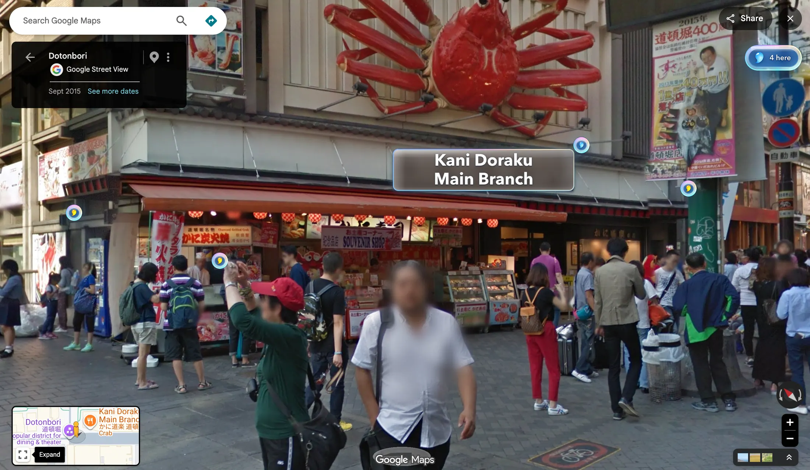
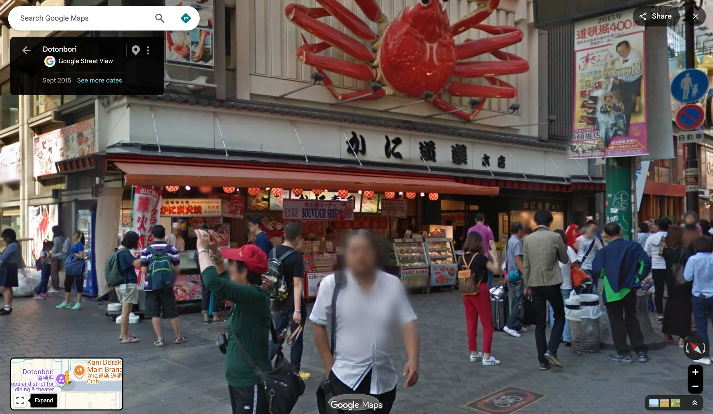
Gloss draws the English directly on the sign, line by line, on the sign’s own colour, where placement is reliable. On a sloping or angled sign, Gloss tilts the English to match, and draws small lines at the size of the sign’s own lettering. The English stays aligned with the picture as you look around.
Gloss draws a line’s English only when it can place it reliably, because a label on the wrong line is worse than none. Other translations remain in the card. If a line is too small to draw on, the card indicates that its English will appear when you zoom in.
You can slide the bar to compare the original street on the left with Gloss on the right.
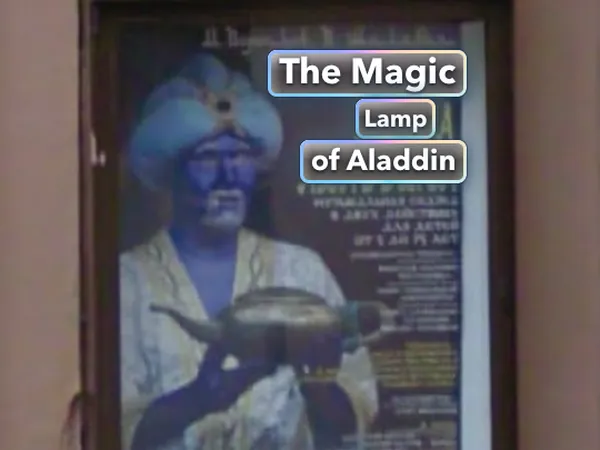
Imagery © GoogleInstall
You install Gloss in Chrome from a folder because it is not in the Chrome Web Store.
Gloss 0.3.2 comes in one zip with two shared keys built in, so you do not need to sign up.
Gloss-0.3.2.zipUse the button above, which is the only download.
Keep the unzipped Gloss-0.3.2 folder in place, because Chrome runs it from there, and follow Updating below if Gloss is already listed at chrome://extensions.
Paste this address into Chrome’s address bar, because web pages cannot link there.
chrome://extensionsThe switch is at the top right of that page.
Select the Gloss-0.3.2 folder. Gloss then appears in the list.
Open Google Maps and go into Street View, or refresh a Street View tab that is already open. Then hold ⌥ Option and drag.
Steps 4 and 5 are marked on a drawing of Chrome’s extensions page.
When you load a folder, Chrome does not ask about permissions. Gloss has permission to read and change your data on all websites, as shown on its Details page. The fine print explains the reason for this permission.
Updating. Your notes and keys are tied to the folder Chrome loaded. Copy the new version’s files over that folder’s contents, then press the reload arrow on Gloss’s card on the extensions page. Loading a second folder creates an empty Gloss installation; your notes stay in the old one, which you must turn off to prevent both running on the page.
Keys
Gloss runs on two shared keys that are built in, so there is nothing to set up. They expire on 14 December 2026. Everyone with this copy shares the keys and someone else pays, so use them sparingly. The repaint key has a total limit of $20.
When a shared key expires or runs out, the card shows a notice and a Settings button. There you can add your own Anthropic key (reading), from the Anthropic Console, and OpenRouter key (repaint), from openrouter.ai/keys. You can add one and leave the other on the shared key.
You can also open Settings from the Gloss icon in Chrome’s toolbar (under the puzzle-piece menu until you pin it) or from the bottom of the saved list. Gloss keeps your keys in the extension’s own storage in your browser.
| From the start | Your own, by 14 December 2026 | |
|---|---|---|
| Readingevery question and follow-up | Shared key, built in | Anthropic keya fraction of a cent each |
| Repaintonly when you press it | Shared key, built in | OpenRouter key2 to 5 cents each |
The vision model Claude Haiku 5.5 reads selections using an Anthropic key. An image model accessed through OpenRouter repaints the signs. Gloss uses your own key before the shared one, and the prices shown apply to your own keys. A repaint that needs a second attempt costs about 10 cents. Repaint uses both keys because the image model paints and Claude checks the result.
The fine print
When you ask about something, Gloss sends only the data listed below to Anthropic or OpenRouter.
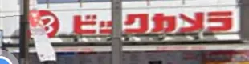
1Your selected area
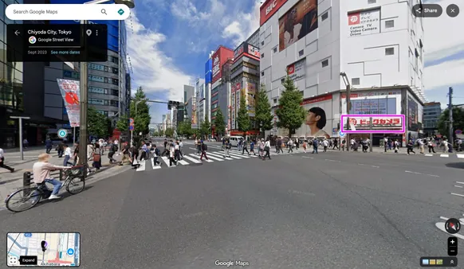
2The whole view, with your box drawn on it
The permission. Gloss needs permission to read and change your data on all websites to capture the tab when you Option-drag rather than click the toolbar icon. Gloss only runs on map pages.